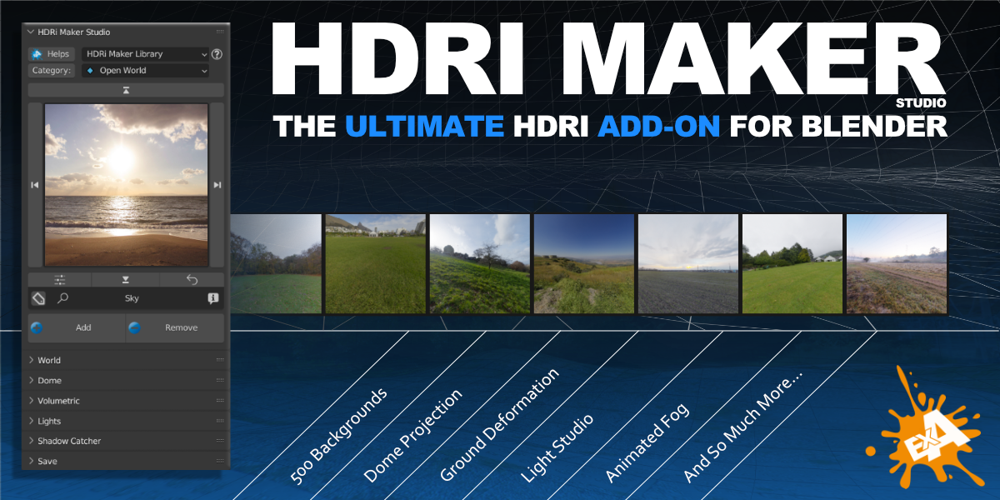

Welcome to HDRi Maker’s documentation!
I invite you to take a look at this documentation to get an overview of HDRi Maker.
I wish you a good reading! Andrew_D
{kind=link}
Tip
The HDRi Maker addon, has an interface with many buttons with a “Question mark” icon ( ? ) most of these buttons redirect to the documentation aimed at that section. I invite you to use these buttons to simplify the use and learning of HDRi Maker.

I wish you a good read and good work / fun with HDRi Maker! Andrew_D
Get started:
Interface and functions:
- Main Panel
- World
- Dome
- Volumetric
- Lights
- Shadow Catcher
- Save
- Preferences
Tutorials:
FAQs & Troubleshooting:
- FAQs
- How can I contact you for assistance?
- Which version of Blender is compatible?
- How many backgrounds are included?
- Can I use the backgrounds for commercial projects?
- Why are the library packages distributed in files of up to 2GB?
- Are updates free?
- If I bought a version that is not PRO, can I upgrade to PRO in the future?
- Do I have to install all the libraries?
- Do I need a powerful graphics card?
- How much Video Memory is needed for 16k images?
- With which rendering engines can I use HDRi Maker?
- Is there support?
- Can I use HDRi Maker on Software other than Blender?
- Can I export the dome as a 3D model?
- Can I import videos as backgrounds?
- Can I use my libraries?
- Does it work with Blender Asset Browser?
- The dome can be modified?
- Will I get a perfect projection with the dome?
- Troubleshooting
- Guidelines for bugreport
Changelog: